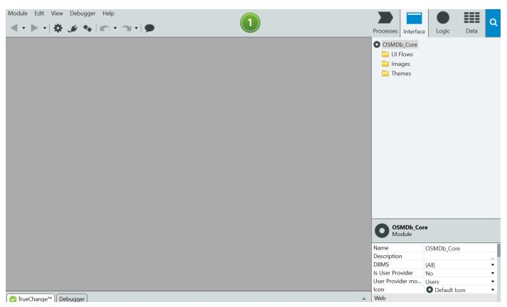
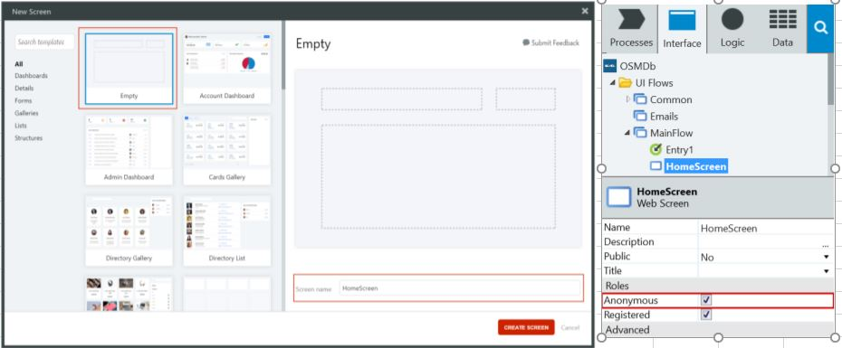

①2つのモジュールを含むWebレスポンシブアプリを作成する
最初に、下記２つのモジュールを用いて映画データベースアプリ（以降、「OSMDb」）を作成する。
- データを扱う Core モジュール
- あらゆる UI とビジネスロジックを扱うレスポンシブモジュール
それでは同アプリ作成を開始する。
まずは、Web Responsive モジュールからである
- ) Service Studio を開き、下記２つのいずれかよりログインする。
- スタートメニューから、もしくはアイコンをダブルクリックして Service Studio を起動
- ［Connect to Environment］または［Switch Environment］ダイアログで、
演習に使用する環境の下記３つを入力し、［Connect］をクリック- アドレス
- ユーザー名
- パスワード
- 「OSMDb_<学習者のイニシャル>」という名前の Web アプリと、同名の WebResponsive モジュールを作成する。
アプリアイコンには、Top Menu アプリテンプレートと osmdb-icon.png ファイルを使用する。
これらの Resources フォルダにある。- ［Applications］タブで、［New Application］を選択
- ここで、Web アプリ、モバイルアプリ、サービスアプリのいずれかを選択可能。
［WebApp］を選択し、［Next］をクリック - このアプリで使用する Top Menu テンプレートを選択し、［Next］をクリック。
テンプレートには Web ページのレイアウトストラクチャが含まれており、
アプリ開発の開始点となる。ここでは、上部にメニューを含むページを選択。 - 次のダイアログで、アプリ名前を「OSMDb_<学習者のイニシャル>」に変更
これ以降は、わかりやすくするためにスクリーンショットや参照で使用する名前はすべて「OSMDb」とする
- 下記手順を行うことによりOSMDb アプリケーションのアイコンとなる。
［Upload Icon］ボタンをクリック Resources フォルダから osmdb-icon.pngファイルを選択 ［Open］をクリックして画像を選択。 - アプリの簡単な説明を入力し、［Create App］をクリック
- ［MODULES］領域には、OSMDb アプリのモジュールリストがある。
初回は、最初のモジュールの名前（アプリの名前）の候補が表示。
モジュールが［Web Responsive］になっていることを確認し、［Create Module］ボタンをクリック


- OSMDb_Core<学習者のイニシャル>モジュール（アプリの 2 番目のモジュール）を作成する。
※UI を含まない Web Blank モジュールに設定。
※特にクラスルームトレーニングに参加者はモジュール名前に学習者のイニシャルを忘れずに追加する事。- ［Application］タブに戻る。
- ［New Module］ボタンをクリックしてモジュールを新規作成
- ［Web Blank］モジュールオプションを選択後に［Create Module］ボタンをクリック。 
ワークスペースに何かが表示されている場合について
この場合はResponsive モジュールが作成されているので、
モジュール削後に新規新規 Web Blank モジュールを作成する。
| ツール | 環境 | どんな場合か？ |
| 個人 | オンラインクラス | |
| ブートキャンプ | クラスルーム トレーニング |
②アプリモジュールをパブリッシュする
パブリッシュの注意事項
このセクションでは、初めてモジュールをサーバーにパブリッシュを行うことにより,
アプリサーバーにモジュールのバージョンが最初に作成される。
これ以降は、新たにパブリッシュするたびに新規バージョンのモジュールが作成される。
このため、客先のWEBサービスをシステム開発等で取扱う場合は大きな影響を与えるので、必ずパブリッシュを行う前に必ずその行為を行ってよいかを上司等に確認を行うこと。
パブリッシュプロセス
- モジュール情報をサーバーにアップロード
- 必要なコードの生成とコンパイルを行う
- 必要なDBスクリプトを作成使用後にDB更新
- アプリをサーバーにデプロイ
- 新規バージョンに反映させたい内容がすべて間違いがないかを確認 (ここが大事)
- ［1-Click Publish］ボタンをクリック → このボタンを押すと二度とやり直しがきかない！
- OSMDb_Core モジュールをサーバーにパブリッシュ
- 下部にある［1-Click Publish］タブにパブリッシュの進捗状況が表示される。
- ［OSMDb (OSMDb)］タブを開き、OSMDb モジュールをサーバーにパブリッシュ
※パブリッシュを行うと、Done ステップで表示されている URL からモジュールの画面を利用可能となる。
通常、URL は「https://hostname/ModuleName」である。
現時点ではモジュールにUIが存在しないため、ブラウザ確認は不可。
➡パブリッシュ後も［1-Click Publish］は緑色のままである。
③「“Hello from the OSMDb app”」メッセージを表示
今まで行ったアプリ作成
1.Web Responsive モジュール 2.Web Blank モジュール
今からやること
ブラウザでアプリを開いたエンドユーザーに対して簡単なメッセージを表示。
やり方
アプリ名を返すだけの単純なアクションを Core モジュールに作成
アプリの HomeScreen にある「“Hello World”」というメッセージの横に名前を表示
このセクションで必要なこと
あるモジュールの要素を別のモジュールで使用ために、2 つのモジュール間の依存関係を作成
これから実行する多くの手順は、Service Studio を操作して熟知するうえで役立つ。
今後のトレーニングや演習でこうした概念を詳細に扱っていくなかで、
手順をすべて明確に理解できるようになるはず
- Core モジュールで、アプリケーションの名前（OSMDb）を返す GetAppName サーバーアクションを作成
GetAppName サーバーアクションを他のモジュールで再利用加納にするため［Public］に設定し、
さらに式で利用できるようにするために［Function］に設定する必要がある。- OSMDb_Core モジュールに切り替え、［Logic］タブを開く。
- Server Actions フォルダを右クリックし、［Add Server Action］を選択。
- 「GetAppName」と入力して、アクションの名前を変更
- GetAppName アクションを右クリックし、［Add Output Parameter］を選択
- Output Parameter の Name プロパティを「AppName」に設定
- ツールボックスから Assign をドラッグし、Start ノードと End ノードの間のアクションフローにドラッグ
- ［Assign］プロパティ領域で、Assignment の一番上にあるドロップダウンからAppName パラメータを選択。
次に、その下に「“OSMDb”」と入力。引用符も必ず入力。→AppName の値が「"OSMDb"」に設定 - ［Logic］タブで GetAppName アクションを選択し、1 回クリックしてプロパティを変更
- アクションのプロパティ領域で、Public プロパティと Function プロパティを［Yes］に設定

Function プロパティについて
［Yes］に設定➡GetAppName アクションを式使用して実行時評価可能となる。
複数の出力パラメータを設定不可
- OSMDb_Core モジュールをサーバーにパブリッシュ
- ［1-Click Publish］ボタンをクリックして、モジュールをサーバーにパブリッシュ
- ［1-Click Publish］タブで、以下のように表示される
- OSMDb Web Responsive モジュールの GetAppName アクションを参照
- ［OSMDb (OSMDb)］タブをクリックして、OSMDb モジュールを開く。
- 画面上部の Manage Dependencies アイコンをクリック
- ダイアログが開き、公開要素を含むモジュールがすべて表示
- 左側で OSMDb_Core モジュールを選択し、
右側で GetAppName Server アクションを選択。
［OK］でクリック確定
- Empty 画面テンプレートを使用して「HomeScreen」という新しい画面を作成し、「Anonymous」に設定
- ［Interface］タブで MainFlow UI フローをダブルクリックして、キャンバスで開く
- Web Screen をワークスペースにドラッグ
- )新しいウィンドウで Empty テンプレートを選択し、画面に「HomeScreen」という名前を付けます。
そして［Create Screen］ボタンをクリック - 右側の［Elements］領域で、MainFlow の下に HomeScreen と表示
- Role の Anonymous チェックボックスにチェックを入れ、
ログインしなくてもすべてのユーザーが画面にアクセス可能にする。

- ［Expression］を HomeScreen に追加して、“Hello from the OSMDb app”を表示
この手順でアプリに名前を付けるにあたり、GetAppName アクションを利用 - ツールボックスから Expression をメインコンテンツ領域にドラッグ&ドロップ
- Expression を「"Hello from the " + GetAppName() + " app."」に設定
- OSMDb モジュールをパブリッシュし、ブラウザでアプリ確認
- ［1-Click Publish］ボタンをクリックして、モジュールをサーバーにパブリッシュ
- この処理を行うと、 ［1-Click Publish］ボタンが変化。→ ［Open inBrowser］ボタンである。
UI がすでに定義されているモジュールでは、パブリッシュが成功するたびにこのボタンが表示 - (完成)このボタンをクリックして、デフォルトのブラウザでアプリを開く。以下のように表示

セクション 2.3Webアプリ作成 終了